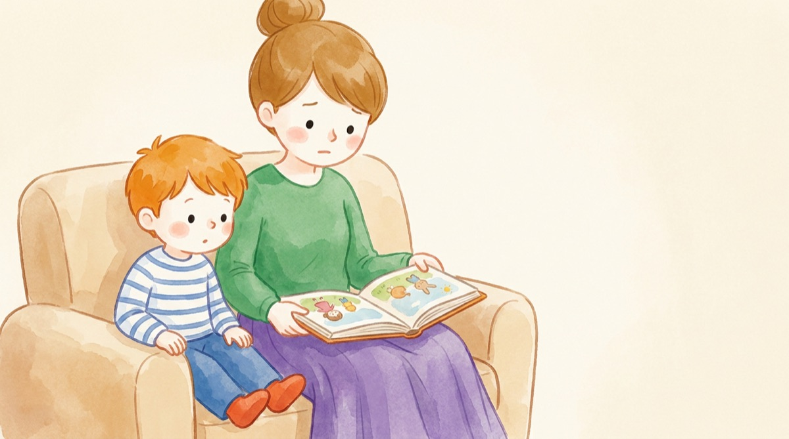
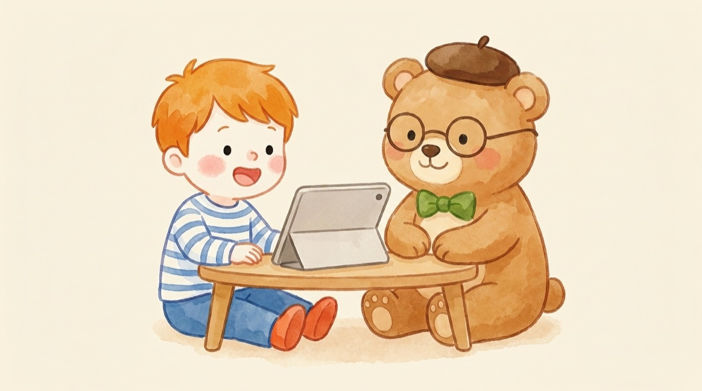
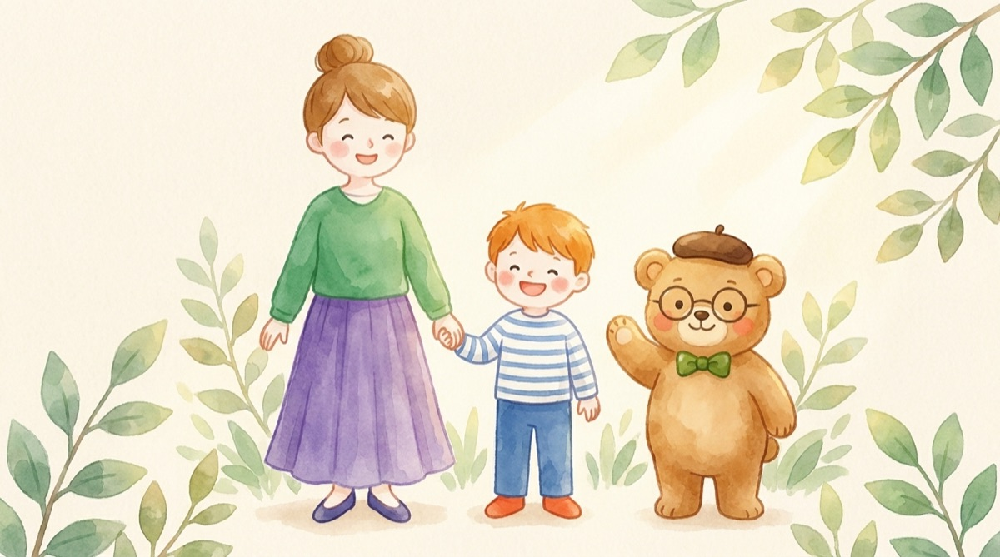

OUCHI ENGLISH METHOD
親が英語を教える必要は、ありません。
わが家がやった4つのこと。
おうち英語がうまくいかないのは、ママの英語力のせいではありません。
フォニックスもサイトワーズも、私は教えていません。10年どう続けたのか、全部書きます。

いちばんの難しさは、教材ではありませんでした
おうち英語がしんどくなる理由は、たいてい教材でも、子どもの反応でもありません。 親のほうが「英語が得意だと思えていない」ことです。
私たちの多くにとって、英語は中学から勉強として押し込まれたものでした。 テストのための英語しか経験がない。だから、
どう進めたらいいのか分からない。
これで合っているのか、自信が持てない。
この2つが、最初に来ます。教材を買っても「やらせてはいるけど、これでいいのかな」が消えない。 その状態が、いちばん続きません。
私も、同じところに立っていました
正直に書くと、私は英語が得意な人ではありません。英語特化型でもありません。 英検は2級で、仕事で英語のシステムやサイトを読むことはできますし、洋楽は好きです。 その程度です。
できなかったのは英語そのものではなく、わが子にどう渡せばいいのかのほうでした。
だから私は、教材を探すより先に、自分が英語に触れ直しました。 オンライン英会話をやってみて、発音の教材で学び直して。 子どもに何かをさせる前に、まず自分が1歩だけ動いた。それが始まりです。
おもしろいことに、フォニックスも、そのなかで自然と身についていました。 子どもに教えるために勉強したわけではありません。 自分がレッスンを受けているうちに、いつのまにか分かるようになっていた。順番はそれだけです。
わが家がやったのは、この4つだけです
-
小さいうちに、発音を整えた
教材と、自分が学んだことを使って。ここだけは早いうちがよかったと思っています。
-
就学前後から、オンライン英会話を週2〜3回
ここで発音を整えてもらい続けて、英文の型を頭に入れ続けました。わが家の柱はこれです。
-
先生は、英語圏の人を選んだ
英語は英語圏の人から教わったほうがいい、と思ったからです。その先生が優しくて、楽しくできたことも大きいです。相性は、成果より先に効きます。
-
フォニックスは、先生にお願いした
私も学びましたが、私が家でやらせようとしたときは、とても嫌がられました。オンライン英会話の先生が、テキストに沿って、たくさんほめながら楽しく進めてくれて、そこで身につきました。サイトワーズも、教わった記憶がないのに、いつのまにか読めるようになっていました。

なぜ、英語圏の先生だったのか
日本人の先生を否定したいわけではありません。素晴らしい先生はたくさんいます。 日本語で説明してもらえる安心感は大きいですし、細やかなところまで見ていただけます。
それでも、うちが英語圏の先生を選んだのは、 日本人の先生との英会話は、どうしても「勉強」になってしまうと感じたからです。
外国人の先生の前では、英語で話すのが当たり前、という認識が子どものなかにありました。 勉強しているのではなく、話さないと通じない人と話している。 その状態をつくりたかったんです。
なぜ、親が教えなくていいのか
私も、フォニックスは学びました。だから、教えることはできたと思います。 それでも、教える役は持ちませんでした。
私がフォニックスをやらせようとしたとき、息子はとても嫌がったからです。 同じことを、オンライン英会話の先生がテキストに沿って、たくさんほめながらやってくれたら、 楽しそうに進んでいきました。 親子だと、どうしても「勉強させられている」空気になってしまうんです。
家庭は、安心できる場所でいい。親は、自分を受け入れてくれる存在でいい。 私はそう思っています。 だから発音もフォニックスも、オンライン英会話の英語圏の先生にお願いしました。 そのほうが、家の中に勉強の空気を持ち込まずにすみます。
サイトワーズにいたっては、「こういうものがあるよ」と教わった記憶もないのに、 レッスンを続けるうちに自然と読めるようになっていました。 親の仕事は、教えることではなく、続く場所を用意して、となりで見ていることでした。
念のため書いておくと、フォニックスを勉強しているママを否定したいわけではありません。 私も学びましたし、学んだことに無駄はありません。 かといって、学ばなければおうち英語ができない、ということもありません。 どちらでも大丈夫です。
うちの子は、見ていてほしいタイプでした
横で見守っているうちに、気づいたことがあります。 この子は、頑張っている自分、できるようになった自分を、褒めてもらいたいんだな、と。
先生から学んで、できるようになっていく。それをママに見ていてほしい。 うちの子はそういうタイプでした。 だから私が教える側にまわると、その形がくずれて、嫌がったのだと思います。
ここは、お子さんの性格によります。 ママと一緒にやりたいタイプの子もいます。その子には、一緒にやるのが正解です。 うちに合ったやり方が、そのままよそのおうちの正解になるわけではありません。 だから、まず「うちの子はどっちだろう」と見てあげてください。
親が英語まるでできないと言っていた家庭でも、お子さんが英語を話せるようになった例をいくつも見ています。 小さいうちから楽しく始められた子は、たいてい簡単なやりとりはできるようになります。 親の英語力が、結果を決めているわけではありません。
今から始める人へ
早く始めた家庭の話をすると、「うちはもう遅い」と感じさせてしまうかもしれません。 けれど、遅いということはありません。
始める年齢が上がったら、やり方の順番を入れ替えるだけです。 小さい子は音から入りますが、大きい子は意味の分かるものから入ったほうが早いこともあります。 うちの子が今何歳なら何から始めるか、そこはおうちごとに変わります。
ここから先は、おうちごとに違います
上に書いた4つは、隠しておくようなことではないので全部出しました。 読めばそのまま試せます。
ただ、ここから先は一般論にできません。
ここまでは、誰でも同じ
- 小さいうちに発音を整える
- 発音もフォニックスも、英語圏の先生から習う
- 週2〜3回を続ける
- 親が教え込む必要はない
ここからは、おうちごと
- 一緒にやりたい子か、見ていてほしい子か
- うちの子が嫌がったとき、どう戻すか
- うちの子に合う先生の見つけ方、替えどき
- 今5歳／8歳なら、どう組み直すか
- 折れそうな時期に、続けるか下げるかの判断
右側は、答えを持っている人が横にいるかどうかで、まったく変わります。 私がやっているのは、この右側のお手伝いです。

ゆるくていい。でも、ゼロにしないで。
「これで合ってる」を、いっしょに見つけませんか
週に1通、おうち英語と学習習慣のメールをお送りしています。
登録された方は、キズナClubの仲間として、配りものもぜんぶ受け取れます。